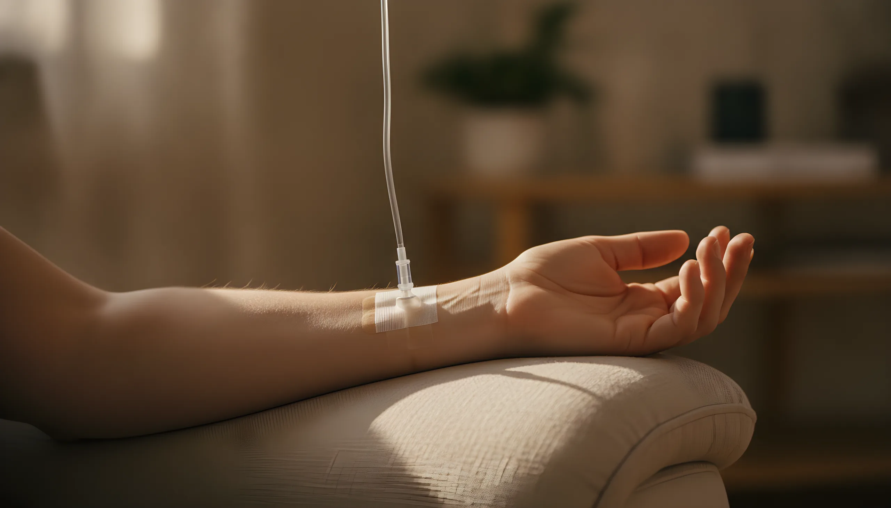

IV or tablets · option C
The stream
The same dose as a flow, leaving the tablets and the drip at the same rate. The tablet’s channel passes the stomach, gut and liver, and some of it falls away at each; the drip’s runs straight into the blood.
IV or tablets?
Same dose, two routes.
By tablet, part of it is absorbed. By IV drip, all of it enters the blood.


By tabletPart of it is absorbed.
By IV dripAll of it enters the blood.
Bloodstreamwhere both are going
Illustration, not to scale. What remains by mouth varies by nutrient, dose and person.
Next on the page
Why we exist.
The next section follows here.